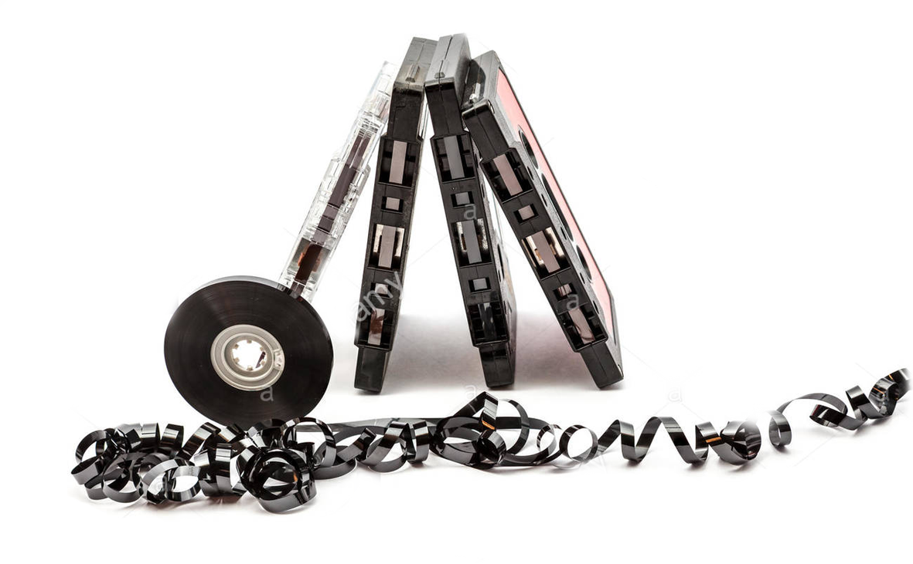

THE LIFE AND DEATH OF
AUDIO CASSETTE
The first cassette player (although mono) designed for use in car dashes was introduced in 1968. Between the early 1970s and the early 2000s, the cassette was one of the two most common formats for prerecorded music
01


In 1962, Philips invented the Compact Cassette medium for audio storage, introducing it in Europe on 30 August 1963 at the Berlin Radio Show,and in the United States (under the Norelco brand) in November 1964, with the trademark name Compact Cassette. The team at Philips was led by Lou Ottens in Hasselt, Belgium.
Cassette tapes are made of a polyester type plastic film with a magnetic coating. The original magnetic material was based on gamma ferric oxide (Fe2O3). Circa 1970, 3M Company developed a cobalt volume-doping process combined with a double-coating technique to enhance overall tape output levels. This product was marketed as "High Energy" under its Scotch brand of recording tapes
+
|
C46 |
C60 |
|
C90 |
C120 |
- Audio
- Broadcasting
- Home studio
- Home dubbing
- Institutional duplication
- Data recording
AUDIO CASSETTE
Following its peak in the late 1980s, the market for cassettes dropped sharply in both Western Europe and North America. This decline was particularly noted when its sales were surpassed by those of CDs in the early 90s. By 1993, cassette player shipments had dropped by 7% and continued to plummet for years to come. In 2001, cassettes covered less than 5% of all music sold. Despite the fact that most U.S. music companies stopped making cassettes by the end of 2002, surprisingly blank cassette tapes are still being made and sold in some stores today.
